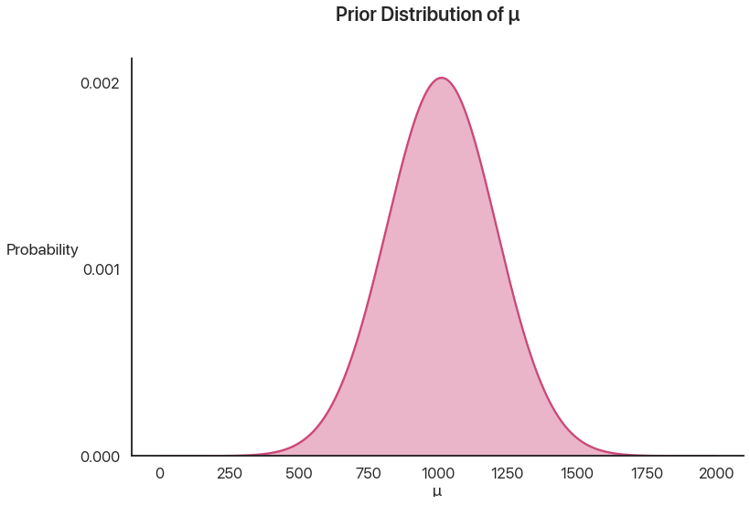
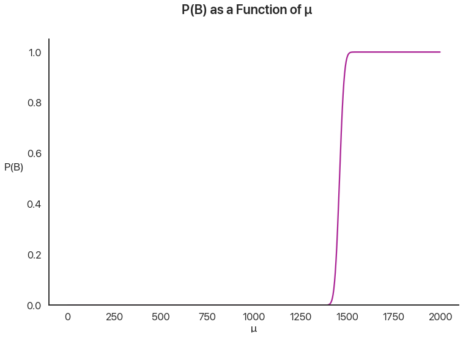
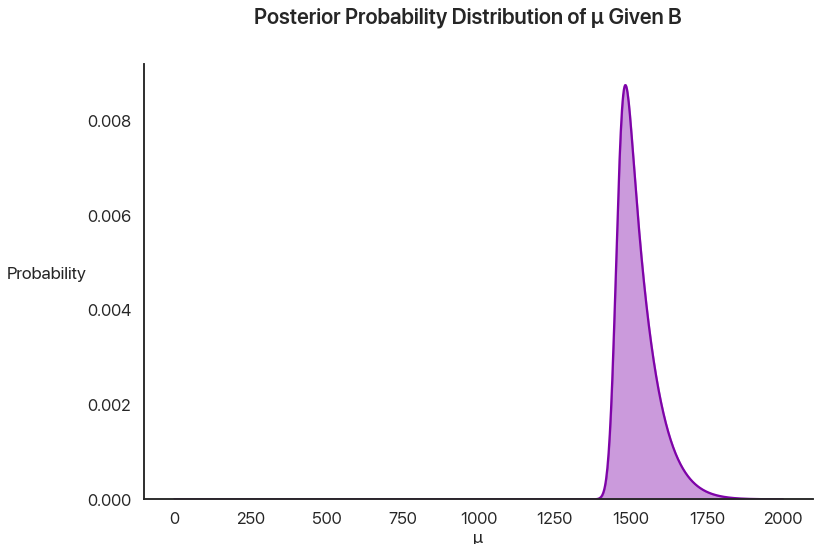
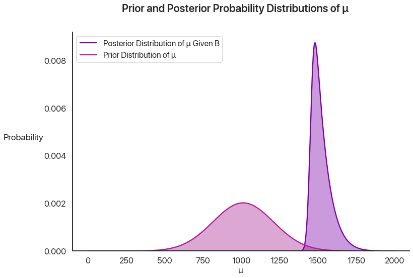
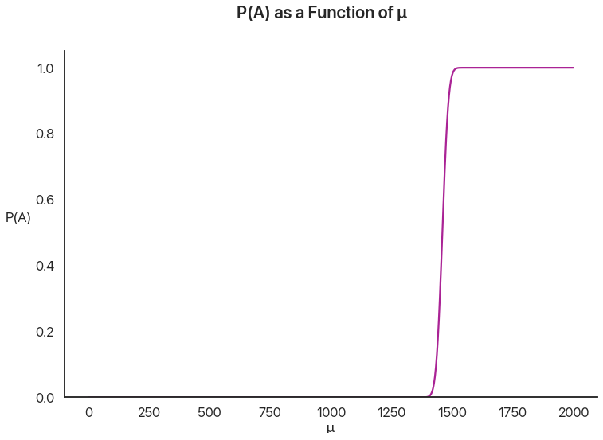
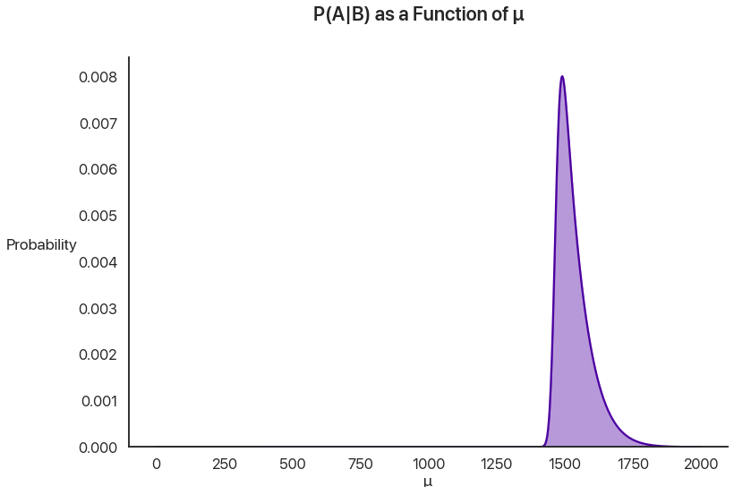
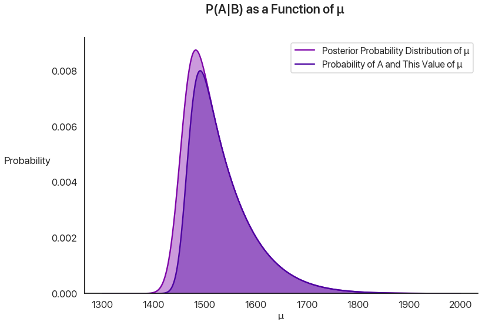

Bayesian Fallacies, Part 2: The Math of the PSAT Math Section
In the last episode, we introduced two thinking errors that often come up in statistics: Bayes’ paradox and regression to the mean. I proposed that these errors are really two different manifestations of the same underlying phenomenon, but I haven’t done much to actually explain that. Let’s fix that now!
Breaking Out Bayes’
To recap, the problem we’re studying is this: given that someone places in the top 1% of PSAT test takers, what’s the chance they repeat that on a second administration? We’re going to use Bayes’ theorem to look at this mathematically. We’re also going to keep things abstract, so that we can plug this in for any scenario in which regression to the mean occurs. This will allow us to generalize later on.
Using our mathematical terminology from last time: given that a first draw from a normal distribution \(N(\mu, \sigma)\), where \(\mu\) is itself drawn from a normal distribution \(N(M, S)\), is above a given threshold \(t\), what is the chance that a second draw does the same?
When we have a hidden variable (the test-taker’s mean score \(\mu\)), in order to use Bayes’ theorem effectively we essentially need to treat it as having an infinite number of discrete possibilities, consider the probability of our result given each possibility, and then sum them together: this is the same idea as saying that \(P(A) = P(A|B) + P(A|\text{not } B)\), just with an infinite number of possiblities.
So, let’s call the event “the second test is above the threshold” \(A\), and the event “the first test is above the threshold” \(B\). We want to find \(P(A|B)\). In order to do this, we’ll first solve this for a specific \(\mu\), and then sum up over all of the possibilities of \(\mu\) using calculus. (One note is that we’ll need to multiply each of these terms by the probability that \(\mu = m\).)
To do this problem we’ll need to break it down a bit. Let’s call the given value of \(\mu\) \(m\). We start with \(B\): this means that the probability that \(\mu = m\) for any \(m\) is given by \(P(\mu = m|B)\), which we’ll need to compute. We can then multiply that by \(P(A|\mu = m)\) and sum up the product of those terms over all of the possibilities to get what we really want, \(P(A|B)\).
A Stats Struggle
Let’s start with \(P(A|\mu = m)\): the probability that, given a certain mean \(m\), the second test administration is a qualifier.
Unfortunately, this problem has no exact closed-form solution with elementary functions. It’s basically the CDF of the normal distribution that we need, which isn’t elementary. We’ll call this \(\Phi(x)\) so we can keep moving and worry about its calculation later. From this, we have \(P(A|\mu = m) = 1 - \Phi(\frac{t - m}{\sigma})\), where \(\Phi\) is the standard normal CDF.
\(P(\mu = m|B)\) is a bit tougher to decompose. Here, we’re gonna use our old friend Bayes’ Theorem, because the reverse of this is actually much easier to compute: we just did it! \(A\) and \(B\) are functionally the same if they’re not being conditioned on each other, so \(P(B|\mu = m) = 1 - \Phi(\frac{t - m}{\sigma})\) just like before.
Using Bayes’ Theorem, we have \(P(\mu = m|B) = \frac{P(B|\mu = m) P(B)}{P(\mu = m)}\). We just did one of those terms, so now let’s tackle \(P(\mu = m)\). This problem is a bit simpler, because the PDF of the normal distribution (what we need here) is a composition of elementary functions: \(P(\mu = m) = \psi(m) = \frac{1}{\sqrt{2\pi}} e^{-\frac{1}{2}\left(\frac{M - m}{S}\right)^2}\).
Now how do we tackle \(P(B)\)? Note that this is the same for all choices of \(m\): it’s essentially a scaling constant that makes this a legit probability. Depending on how we set \(t\), we might get this for free: if we design \(t\) to include, say, the top 1% of test takers, then \(P(B)\) is obviously \(0.01\). We can go in reverse if necessary, by doing an integral \(\int_{-\infty}^{\infty} P(\mu = m) P(B|\mu = m)\ dm\), but this is a double-not-nice expression: it’s an integral involving \(\Phi\), which we already don’t have a closed form for. However, because it is a constant, we only have to compute it once per problem.
Computational Calculus
So we finally have an…expression for \(P(\mu = m|B)\). It’s not nice to work with, or easy to compute by hand, but it is an expression, so we’ll leave it there for now. We already have \(P(A|\mu = m)\), so we can get one big giant expression for the probability we’re interested in.
\[ P(A|B) = \int_{m=-\infty}^{\infty} P(A|\mu = m) P(\mu = m|B) \ dm \] Decomposing the second term using Bayes’ Theorem, we get \[ P(A|B) = \int_{m=-\infty}^{\infty} P(A|\mu = m) \frac{P(B|\mu = m) P(\mu=m)}{P(B)} \ dm \]
“Elementary function” is a little arbitrary of a standard, so don’t get too dismayed that we didn’t solve this problem in that way. A computer would use a numerical approximation technique to compute \(\sqrt{2}\), and it’ll use a numerical approximation technique to compute this function as well. Convention is the only reason why \(\log\) is elementary but \(\Phi\) isn’t: both aren’t going to be something you can do by hand.
We know how to compute each of theses pieces, so we can now theoretically compute this probability directly (without sampling like we did earlier), using a computer to handle the tricky integrals. We can’t get a closed form, but this is good enough for our purposes. This is a great time to take a step back and try and do something a bit more concrete after all of this math, so let’s apply this to our running example and compare it with what we simulated last time. We’ll use the following parameter values, the same as before:
- Our threshold \(t\), will be \(1460\).
- Our mean score in total \(M\) will be \(1014\) as before, and our standard deviation of the test takers’ means \(\mu\) \(S\) will be \(197\). This means that the actual test scores are the tiniest bit more spread out than this, historically, but not enough to make a major difference.
- \(\sigma\), the individual variance of each test-taker, is going to be \(20\).
Let’s compute \(P(B)\) first, by simply running the integral through a computer and seeing what comes outlier. In this case, we get \(0.0119\): decently close to the actual percentage of National Merit winners. Now that we can treat this as a constant, we can compute the remaining integral and solve the problem.
Pretty Pictures
I don’t want to just do this and tell you the answer, because that’s not really all that much fun on your end. Let’s break out some visuals instead!
This is the prior distribution of \(\mu\), before we actually learn anything: just a nice bell curve:

Then, we are given that \(B\) happens: the individual gets above the threshold. How likely is it that, given any particular value of \(\mu\), \(B\) happens?

This is just a straight pointwise multiplication of the last two graphs: if you don’t believe me, pick a \(\mu\) value and try it yourself. This represents the intuition that people who are better test-takers on average are more likely to qualify. Note how sharp the cutoff is: this is because the standard deviation of any given test taker, \(\sigma\), is \(20\), which is tiny compared to the huge \(197\) standard deviation of \(\mu\). Even a test taker \(50\) points away from the cutoff on average has to have an amazing day to qualify.
To get the probability of \(\mu\) being any particular value given \(B\), we can use Bayes’ theorem: multiply these together and divide by \(P(B)\) so everything adds up to what it should. This is called the posterior distribution: the new distribution using our given information.

We can plot the prior and posterior together to show the effect of our knowledge:

This is pretty cool when you think about it: by using Bayesian statistics, we can quantify something that you really don’t think of in the same way in standard high school stats—the effect of learning something new. By getting the knowledge that a test taker qualified, we can model the selection effect I described last time and we now know more about how good at the PSAT they’re likely to be.
We’re almost there! Now, the probability of \(A\) given some \(\mu\) is the same as the sharp distribution we graphed earlier for \(B\).

But now, instead of using the prior distribution of \(\mu\), we’re going to multiply this by the posterior distribution of \(mu\). This, in essence, allows us to factor in our prior knowledge about \(B\) to make better guesses about \(A\).

Let’s compare this with the posterior probability of \(\mu\) and change the axes to give us a little more breathing room:

This chart is really important: let’s pause a second and go over it. The lighter shade of purple is the posterior distribution of \(\mu\), given \(B\). It’s the probability that \(\mu\) is any specific value, given that the first test administration qualified for National Merit. The darker purple inside of that region adds one more qualifier: what’s the probability the test-taker has that value of \(\mu\) and that they qualified a second time? The ratio at any given value of \(\mu\) on the x-axis of the heights of the two curves gives the probability that a test-taker with that \(\mu\) value qualifies on the second administration.
Let’s look at two values to make this more concrete. At \(\mu = 1400\), there’s the tiniest chance that you got extraordinarily lucky and qualified the first time: the chance you got that lucky was low, but it’s possible, especially given that there are more test takers with this value for \(\mu\) than there are for higher values. However, the cutoff is applied not once, but twice: this is the killer. The chance that lightning strikes twice and that you qualify a second time is virtually nothing, and so anyone in this group is likely to be part of the population that regresses: they got lucky once, but they probably won’t get lucky again. This is the regression effect at work. At \(\mu = 1500\), it’s extremely unlikely you had that \(\mu\) value to begin with, but if you are that good at the test you’re likely to qualify the first time. (In fact, it’s so much more likely that, even though having a \(\mu\) value of 1500 is way less likely overall, the population of people that qualify are far more likely to have this value of \(\mu\) than \(1400\).) However, unlike at \(1400\), you’re also likely to qualify a second time! This is the selection effect at work. This is why the two curves have almost the same height: given that you got there, you’re likely to go the distance.
Now, to get the final probability and compare with last time, we just have to compute the ratio of these shaded areas. Note that the outside shaded area has to add up to \(1\): given \(B\), \(\mu\) has to be something. (This is why we divided by \(P(B)\) earlier: we wanted the area of this curve to be \(1\). We actually want to learn what \(P(A)\) is now, so we care about it’s unscaled area.) Thus we really just care about integrating the inner curve. Doing that, we get a final probability of about \(P(A|B) = 0.87022\), or 87%. This matches up very well with our simulated results from last time, which gives us some confidence we didn’t mess anything up along the way.
Next Time On Bayesian Fallacies…
What was the point of all this again? Although we didn’t succeed in getting an exact closed form for \(P(A|B)\) given \(M, S, t\), and \(\sigma\), we did get an expression that a computer can easily evaluate for us in no time flat, to a higher degree of precision than simulations can provide.
The reason I wanted to do this in the first place was so we could explore what happens when we change the parameters. What about the way the PSAT example is set up makes it not display a large regression effect? If the National Merit cutoff were harsher or more lenient, how would \(P(A|B)\) change? Next time, we’ll explore how \(P(A|B)\) changes as a function of $M, S, t,$ and \(\sigma\), and we’ll finally answer the question of how this relates to Bayes’ paradox and get some powerful ways of visualizing the effect of regression to the mean in problems outside of standardized tests.